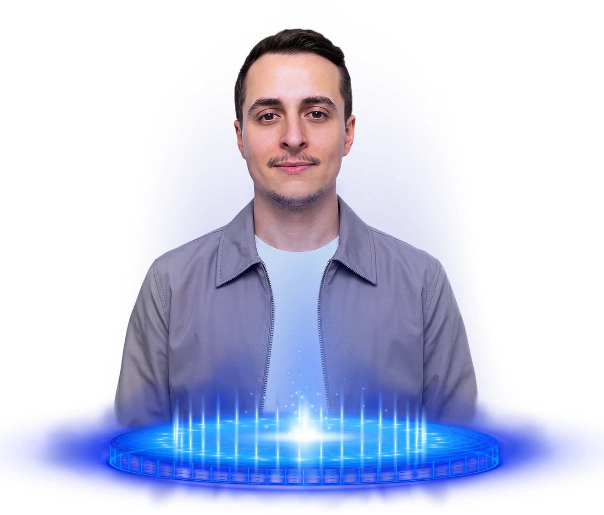

Seu concorrente já está no Google. E o seu negócio?
A DA STUDIO cria landing pages e sites profissionais que colocam seu negócio nas buscas, passam autoridade em segundos e transformam pesquisa em conversa no WhatsApp.
Todo dia, alguém pesquisa o que você vende. A pergunta é: essa resposta vai ser você, ou o seu concorrente?
Sem uma página, seu negócio é invisível para quem está pronto para comprar.
Marque o que acontece com você hoje. Cada item é um cliente indo para o concorrente sem nem saber que você existe.
Toda pesquisa no Google termina em alguém. Hoje, não termina em você.
Simulação do que aparece quando alguém procura pelo que você vende. Repare em quem está lá. E em quem não está.
Site profissional, serviços explicados, avaliações e agendamento pelo WhatsApp.
Landing page com oferta clara, prova social e botão de contato em um toque.
Não encontrado. Sem site e sem perfil no Google, esta posição é do concorrente. Todo dia.
O Google Meu Negócio coloca você no bloco local e no Maps, com avaliações, horário e botão de ligar. É onde a busca “perto de mim” termina.
Um site ou landing page com SEO aparece para “seu serviço + sua cidade” todos os dias, sem pagar por clique.
GEO: conteúdo estruturado para o ChatGPT, o Gemini e o modo IA do Google recomendarem o seu negócio quando alguém pergunta.
Quem ocupa esses três lugares recebe o cliente. A DA STUDIO coloca o seu negócio nos três.
Presença digital completa, começando pelo que mais importa: a sua página.
Cada serviço existe para uma coisa: colocar seu negócio na frente de quem procura e transformar essa busca em cliente.
Do Google ao WhatsApp: o caminho que o cliente faz quando você tem uma página.
Cinco passos entre uma pesquisa e um cliente. Toque em cada um para ver o que acontece com e sem a sua página.
Por isso a DA STUDIO não entrega “só um site”. Entrega o caminho inteiro, da pesquisa ao cliente.
Trabalhos que colocaram negócios no mapa.
Landing pages, identidades e campanhas criadas pela DA STUDIO. Arraste para explorar e toque numa arte para ampliar.
A diferença entre ser procurado e ser encontrado.
Não é “um site bonito”. É uma máquina de ser encontrado.
Tudo o que a DA STUDIO entrega em cada landing page ou site. Sem letra miúda, sem “isso é à parte”.
Do briefing à página no ar, em etapas claras e sem surpresa.
Você sabe o que acontece em cada fase, aprova antes de avançar e recebe tudo pronto para usar. Role e veja a luz acender cada passo.
Descubra em 40 segundos o quanto seu negócio está invisível no Google.
Cinco perguntas rápidas. No final, a DA STUDIO mostra o que está faltando e você pode pedir uma proposta personalizada na hora.
O que todo mundo pergunta antes de fechar.
Ficou outra dúvida? Fale com a DA STUDIO no WhatsApp.

DA STUDIO: design que posiciona e página que vende.
A DA STUDIO é um estúdio de design e presença digital fundado por Devikison Aguiar, designer com mais de 7 anos de mercado e mais de 70 marcas atendidas em todo o Brasil.
O estúdio nasceu de uma constatação simples: existe negócio bom demais para continuar invisível. Por isso a DA STUDIO une design, copy, SEO e tráfego num só projeto. A página fica bonita, aparece no Google e transforma pesquisa em conversa.
O atendimento é direto com quem cria, do briefing ao pós-entrega. Sem intermediário, sem fila e sem projeto entregue e esquecido.
Seu concorrente já está no Google. Hora de você aparecer também.
Fale com a DA STUDIO no WhatsApp. Em uma conversa você recebe uma proposta com valor e prazo fechados, sem compromisso.